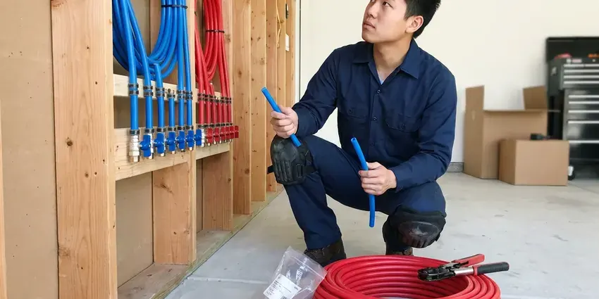

Backflow Preventer Installation in Alexandria, VA
Got a backflow notice in Alexandria, VA? FBN Plumbing installs the assembly your provider requires and files the test report.
- Fast Installs
- Local Crews
- Certified Testers
- Licensed Virginia Plumbers

Need a Backflow Preventer Installed in Alexandria, VA?
Call now for a quote on backflow preventer installation, with the initial certification test.
Backflow Devices for Alexandria, VA Homes and Businesses
FBN Plumbing picks the backflow device by hazard, not by price. Irrigation and chemical injection call for very different devices, and we help Alexandria owners choose the one that meets Virginia health regulations and passes the provider's inspection the first time. The wrong type gets rejected.
Our expertise includes:
- Residential and commercial assemblies
- Fire line and boiler backflow protection
- Initial certification testing and report filing

Additional Plumbing Installation Services in Alexandria, VA
We install water heaters, pumps, lines, and fixtures across Alexandria, VA with careful, permitted work that passes inspection the first time.


Customers
Why Choose FBN Plumbing for Backflow Preventer Installation in Alexandria, VA?
Training covers every part of backflow work, from assessment to testing. Each plumber learns the internals of every assembly, down to the check springs and relief valve seats, so they can spot a bad installation on a building we take over and fix it before the next test. We carry rebuild kits.
- Tested Onsite, A certified tester checks every new device before it goes into service.
- Property Protection, Stopping backflow protects your whole plumbing system and avoids costly cleanup.
- Paperwork Handled, Test reports go to your water provider from us.
Citywide Coverage
Homes and businesses across Alexandria get prompt service. We schedule installs around your hours, including early mornings or weekends for businesses that cannot lose water during the day, and we keep the shutoff as short as the job allows. Most shutoffs last an hour or two.
Experienced Team
Our licensed plumbers install backflow devices every week. Ongoing training keeps them current on assemblies and code, so the installs they do in Virginia match what inspectors and testers are looking for this year, not five years ago. The code shifts over time.
Safety-First Approach
Cross-connection problems often hide in the building, not at the meter. We check boilers and process lines, because a containment device at the meter protects the public supply but does nothing for the people drinking from fixtures inside your own building in Alexandria. That is what isolation devices are for.
Trusted Certified Alexandria Plumbing Services Professionals
At FBN Plumbing, we take pride in licensed, certified plumbing services throughout Alexandria, VA. Credentials matter in this trade. Every repair, install and maintenance visit follows strict safety and quality rules, and the plumbers doing the work carry recognized industry credentials.
Call Us Now PHCC Plumbing Contractor Recognition
PHCC Plumbing Contractor Recognition Better Business Bureau (BBB) Accreditation
Better Business Bureau (BBB) Accreditation Angi Certified Pro
Angi Certified Pro ISO 9001 Quality Management Certification
ISO 9001 Quality Management CertificationBackflow Preventer Installation Services in Alexandria, VA
Reduced Pressure Zone (RPZ) Assembly Installation in Alexandria
Two independent checks and a relief valve make up an RPZ. If the zone between the checks loses its pressure margin, the relief valve opens, dumping water to the floor or a drain so nothing can pass upstream, which is why we never bury one in a pit in Alexandria. We install Watts and Febco units.

Commercial Backflow Preventer Installation in Alexandria
Soda machines and boilers each create a cross-connection inside a business. Our plumber walks the building and records each one, install containment at the meter and isolation devices at each hazard, and give you documentation for every device for your records and for your water provider in Alexandria. We schedule around your hours.
Backflow Enclosures and Freeze Protection in Alexandria, VA
Above-ground assemblies bake in summer sun and can freeze on a cold night. Higher elevations in the west of Virginia freeze more frequently and harder than coastal areas, so pipe insulation matters more there. Depending on exposure, we add an insulated enclosure or a heated cabinet, and a locking enclosure also stops scrap thieves, who target brass assemblies because they are easy to unbolt and sell by weight in Alexandria, VA. Enclosures leave room for testing.
Irrigation Backflow Preventer Installation in Alexandria
Fertilizer and herbicides in drip and sprinkler lines are exactly what a backflow device keeps out of your drinking glass. We install a PVB or double check based on local rules, along with the layout of your system. PVBs go 12 inches above the highest head.
Code-Compliant Backflow Installation in Alexandria, VA
Virginia uses a uniform statewide building code that incorporates the International Plumbing Code, enforced by local building officials. Backflow rules vary by water provider, so the device that passes in one town may not pass the next one over. The requirement gets checked before any assembly gets ordered, then pull the permit, install at the right height and orientation, and book the inspection in Alexandria, VA. Planning beats a second install.
Emergency Backflow Preventer Repair in Alexandria
Water spraying from the relief valve or a cracked body after a freeze needs fast attention. We isolate the device and assess it the same day, then rebuild it if the body is sound or replace it if it is not, so your home or business in Alexandria stays protected and compliant. Most failures are fixable.
Understanding Backflow Preventer Installation Costs in Alexandria, VA
Device type sets most of the price, followed by pipe size and how much piping has to change. A PVB on a house sprinkler line is a short visit, while a 4 inch RPZ on a commercial main involves heavy valves, supports, a drain plan and sometimes an enclosure, so the two land far apart on a quote in Alexandria, VA. You get the price in writing.

Residential Backflow Preventer Installation in Alexandria
Lawn sprinklers are the most common reason a house needs a backflow device. We look at how your irrigation ties into the main, check what your water provider requires, and install a pressure vacuum breaker or a double check assembly on that branch so yard water cannot reach the kitchen tap in Alexandria. Figure on a few hours.
Backflow Installers Near You in Alexandria, VA
Our team knows the water systems and municipal requirements throughout Alexandria. Knowing the local rules makes the job faster, and it means the device is placed where the tester can reach it and where it will hold up for years against weather and the occasional lawn mower. Placement matters a lot.
Got a notice from your water provider and searched for a backflow installer nearby? Call us with the notice in hand, and we can usually schedule installation and testing within a few days, making sure the device matches exactly what the letter asks for. Deadlines are usually 30 to 60 days.
FBN Plumbing at a Glance
- Fully licensed plumbing team covering Alexandria, VA
- Same-day appointments and 24/7 emergency response
- Clear written estimates, no hidden fees
- 4.9-star rated by 798+ Virginia customers
Alexandria Map
Alexandria Information
- Population
- 155,230
- Area codes
- 703/571/202
- Service area
- Alexandria and towns within a 40 mile drive
- Nearby
- Arlington, McLean, Reston, Dale City
A backflow preventer in Alexandria, VA stops irrigation and process water from flowing backward into your lines when pressure drops.
Expert Services
Reach out to FBN Plumbing for reliable plumbing work done by licensed pros in Alexandria, VA.
Our Specialized Plumbing Services in Alexandria, VA
At FBN Plumbing, you get every kind of plumbing service from one company across Alexandria, VA. From leak detection to full system installs, our team works fast and charges fair prices on homes and commercial properties alike. Take a look at our core services below:


What a Backflow Install Looks Like in Alexandria, VA
FBN Plumbing keeps the process short for Alexandria customers, usually one visit.
Request a Quote
Call (434) 230-6997 and read us any notice from your water provider. We confirm the device and give you a clear price.
Install the Assembly
We shut off the water, install the assembly with unions and test cocks, and add an enclosure if needed. Water comes back within a couple of hours.
Test and Certify
A certified tester checks and tags the new device. We send results to your provider and give you a copy.
Frequently Asked Questions About Backflow Preventer Installation in Alexandria
Residential PVBs usually cost $250 to $700 installed. Double check and RPZ assemblies for larger homes or businesses run $800 to $3,500 or more, depending on size and whether you need an enclosure.
Watts, Febco, Wilkins by Zurn and Apollo assemblies. Repair kits for each are easy to get, which keeps future service affordable.
Most residential installs finish in 2 to 4 hours. Commercial jobs with extensive pipe changes can run a full day, and we keep the water off for as short a stretch as the work allows. That time includes the test.
Yes, both the workmanship and the device are covered. The exact terms are written on your quote and invoice, and the manufacturer warranty on the assembly runs alongside ours, usually one to five years depending on the model you choose. Registration is handled.
No, not for testable assemblies. Installation has to meet code and be certified, and a bad install can lead to contamination, fines and a second visit from the water provider that costs more than doing it right the first time. This one is for a pro.
Residential installs typically take two to four hours, test included. A big commercial assembly may take the whole day, especially if the piping has to be reconfigured.
Two to four hours covers most residential installs. Large commercial work or major repiping takes longer, sometimes a full day, especially when the water provider requires the shutoff to happen outside business hours. We give you a time window.
At each cross-connection, where non-potable water could reach the potable side. That means irrigation tie-ins, fire sprinkler lines and boilers, plus auxiliary water supplies, often just after the meter for containment or right at the piece of equipment for isolation. Some buildings need both.
What People Are Saying About Our Plumbing Experts?

Emily R.
The shutoff valve under our kitchen sink snapped off in my hand on a Sunday morning. FBN Plumbing had someone out by early afternoon. He replaced both angle stops with quarter turn valves and showed me where our main shutoff was, which I honestly did not know.
Plumbing Repair · Arlington, VA
Robert G.
The camera showed a full break in our clay sewer line near the street. FBN Plumbing replaced it with a trenchless pipe burst, so the only digging was two small pits in the yard. They let us watch the footage before and after.
Sewer Line Replacement · Alexandria, VA
Sofia M.
Two new toilets went in during one visit. The tech set them on new wax rings and swapped the old supply lines. He also noticed our bathroom faucet dripping and replaced the cartridge while he was there. No mess left behind.
Toilet Installation · McLean, VA
Angela D.
Our sump pump quit during a storm and the water was an inch from the basement carpet. FBN Plumbing put in a new pump with a battery backup that same evening. We have had two heavy rains since. It kicked on both times.
Sump Pump · Leesburg, VA
Carlos V.
Our house still had galvanized pipe, and upstairs the shower was a trickle. The crew repiped everything in PEX over three days and patched every drywall hole before they left. The pressure difference is night and day.
Repiping · Leesburg, VA
Greg S.
I manage a small strip center with six tenants. FBN Plumbing handles our annual backflow testing and fixed a recurring clog in the shared sewer line that had been backing into the nail salon. Their reports come in clean and on time.
Commercial Plumbing · Dale City, VA